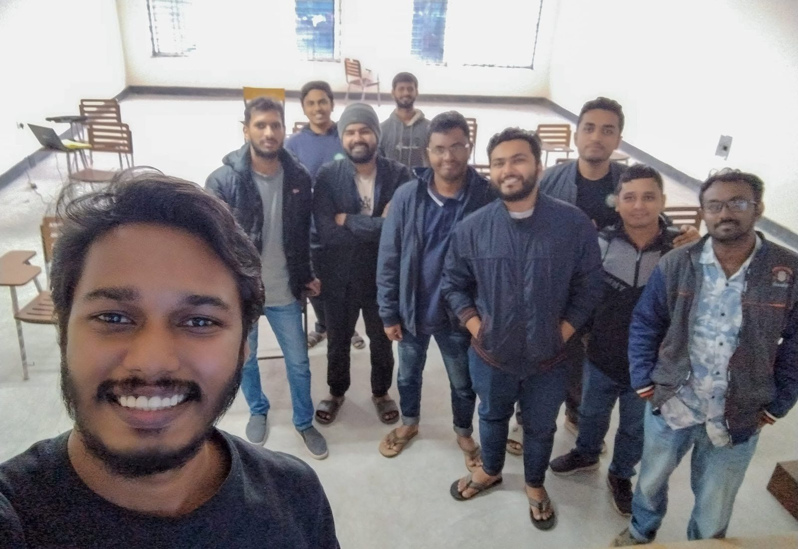

চলমান
ইটিপি ডিজাইন ও আইইই প্রতিবেদন, রিসাইকেলড পেপার কারখানা, সিরাজগঞ্জ
একটি রিসাইকেলড পেপার কারখানার জন্য ইফ্লুয়েন্ট ট্রিটমেন্ট প্ল্যান্ট ডিজাইন ও আইইই প্রতিবেদন প্রস্তুত।
আমরা এখন যা নিয়ে কাজ করছি এবং যা সম্পন্ন করেছি। ক্লায়েন্টের তথ্য গোপন রাখা হয়।
একটি রিসাইকেলড পেপার কারখানার জন্য ইফ্লুয়েন্ট ট্রিটমেন্ট প্ল্যান্ট ডিজাইন ও আইইই প্রতিবেদন প্রস্তুত।

ডুয়েট, গাজীপুরের আইডব্লিউইতে একজন শিক্ষার্থীর থিসিসে গবেষণা ও বিশ্লেষণ সহায়তা।
আইইউবিএটির একজন এমএসসি শিক্ষার্থীর থিসিসে গবেষণা ও বিশ্লেষণ সহায়তা।

চারটি অনলাইন ও দুটি ক্যাম্পাস ব্যাচ, প্রতিটিতে প্রায় ৩০ থেকে ৫০ জন শিক্ষার্থী।
একটি প্রকল্প খুলে দেখুন এতে কী কী কাজ ছিল। আপনারও কি এমন কাজ আছে? projects@bgrcbd.com
আপনার কী প্রয়োজন, সংক্ষেপে লিখে পাঠান। আমরা এক কর্মদিবসের মধ্যে উত্তর দিই, সাধারণত কিছু প্রশ্ন ও একটি প্রাথমিক পরিকল্পনাসহ।